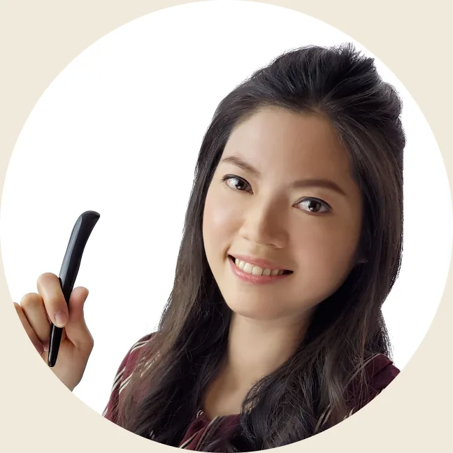
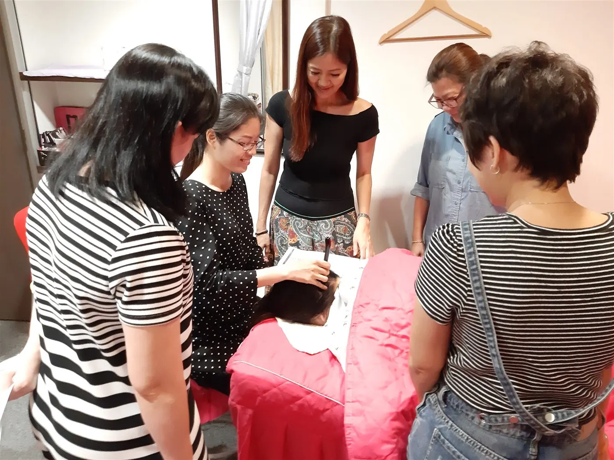
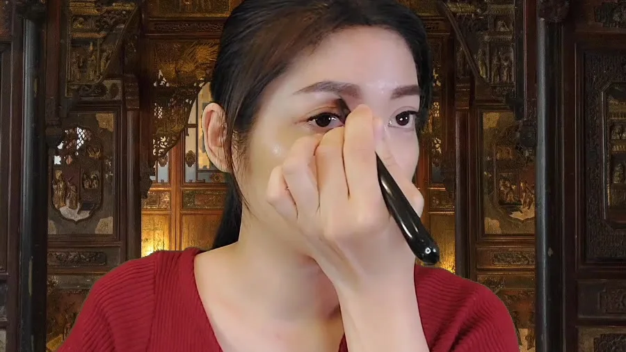
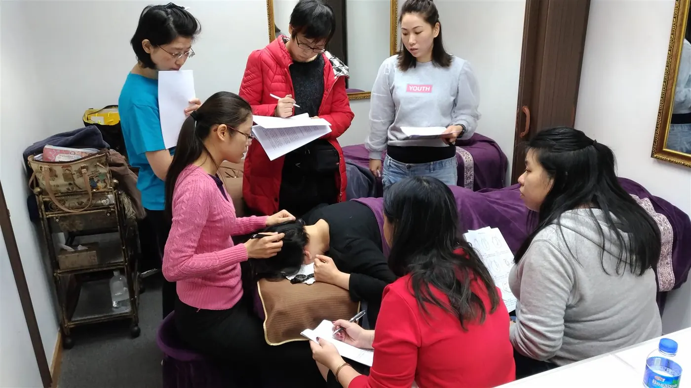

Scaffolded, step-by-step learning
You start simple and build up. Each stage has a small practice and a checkpoint, so the technique settles into a habit instead of slipping away, the opposite of piecing it together from scattered clips.
The Bojin Method
A gentle face and neck release that follows the natural lines of your face: the right order, angle, and comfortable pressure, never force. No beauty background, no expensive machines, just a simple stainless steel bojin stick and a method you can learn at home.
Trusted by more than a thousand students: beginners, grandmothers, and men included.

Yu-Ting Lan, from Taiwan · bojin instructor
What the method is
Bojin (撥筋) means to gently comb and release the fascia and soft tissue that hold tension in your face and neck.
Following the natural lines of your face, in the right order, at the right angle, with the right comfortable pressure, the Bojin Method uses one simple bojin stick to ease the tightness behind a dull, heavy-looking face: tired eyes, dry and strained eyes, fine lines, slackness, and the sluggish circulation that quietly reads as "older." Many students also use it to help serums absorb better, to care for family members, and to save on costly spa visits.
Unlike piecing things together from random videos, this is a structured method with a clear order, real practice, and feedback, so the habit actually sticks.
Not sure where to start?
Take the 1-minute quiz and we'll match you to the gentle ritual your face needs right now, plus a free personalized starter guide.
Yu-Ting Lan, from Taiwan · founder of Héhé Studio (和合雅築).
Meet your instructor
I'm an international bojin instructor and the founder of Héhé Studio. For years I taught this work hands-on, one face at a time, watching students who had never touched a beauty tool learn to read tension and release it themselves.
When the 2020 pandemic closed my in-person classes, I rebuilt the entire program online, broken into small, doable steps, with practice assignments and personal feedback, so the method could travel intact from my hands to yours. My aim is simple: give you a calm, repeatable ritual you can trust for years, not a one-time treatment.
Credentials
1,000+
students taught, from complete beginners to grandmothers
3
countries taught in: Taiwan, Hong Kong & Malaysia
2020
featured in Taiwan's “Top 100 Brand Stories”
Founder of Héhé Studio (和合雅築) and an international aesthetics academy · certified instructor with three professional associations.
In the room
For years, Yu-Ting taught the Bojin Method the way you see here: small groups, hands guided one face at a time, until the right, gentle pressure becomes second nature. The online course carries that same close, patient teaching from her hands to yours.

Why it works
Three things make this different from learning on your own.
You start simple and build up. Each stage has a small practice and a checkpoint, so the technique settles into a habit instead of slipping away, the opposite of piecing it together from scattered clips.
How you hold the tool, the angle, the pressure: these are the details a video alone can't teach. You practice, you send it in, and you get personal feedback so you're not guessing whether you're doing it right.
You get full supporting materials plus one month of online consultation after the course, so questions get answered while the routine is still new and you're building confidence.
A track record you can check
5.0★
average Google rating
324
Google reviews
598
Facebook recommendations, 100%
1,000+
students taught
From Yu-Ting Lan's studio in Taiwan (和合雅築 SPA), where the Bojin Method was refined over a decade.
In their words
What students say after learning with Yu-Ting, across Taiwan, Hong Kong and Malaysia.
I had a full-body session and learned facial bojin too. She worked with such care, it felt lovely, and I felt much looser afterwards. Every detail was explained.
One-on-one, she patiently talked me through every step and corrected my posture. Very professional, and the difference was clear.
The teacher came all the way from Taiwan to teach us in Hong Kong. She taught with such care, so good and so practical. Thank you!
I took the head and face course today. Her careful, patient explanations meant that even I, with no background, picked it up easily. A wonderful class.
It cost me a day off, but I gained far more than a day's worth. Even a rough-handed guy like me could follow it. Highly recommend.
So patient, teaching hands-on. The class was meant to end at 5:30, but she cared so much she kept going until we truly had it. So grateful to have found the right teacher.
Real reviews, translated from the original Chinese. Individual experiences vary. This is self-care, not medical treatment.
See it on one side
The simplest way to see what bojin does: work one side of the face, leave the other, and look in the mirror. Same face, same day.
The worked side looks a little more awake and lifted-looking. Individual results vary, and this is gentle self-care, not medical treatment.
See the method in action
A glimpse of Yu-Ting teaching the gentle facial technique. The lesson is in her native Mandarin, but the gentle, precise movements speak for themselves.

Watch the lesson on YouTube
Ten quiet minutes a day. That is the whole of it.
Start today
Begin with the free 3-minute video, the condensed first lesson of the method. It's the gentlest possible place to start.